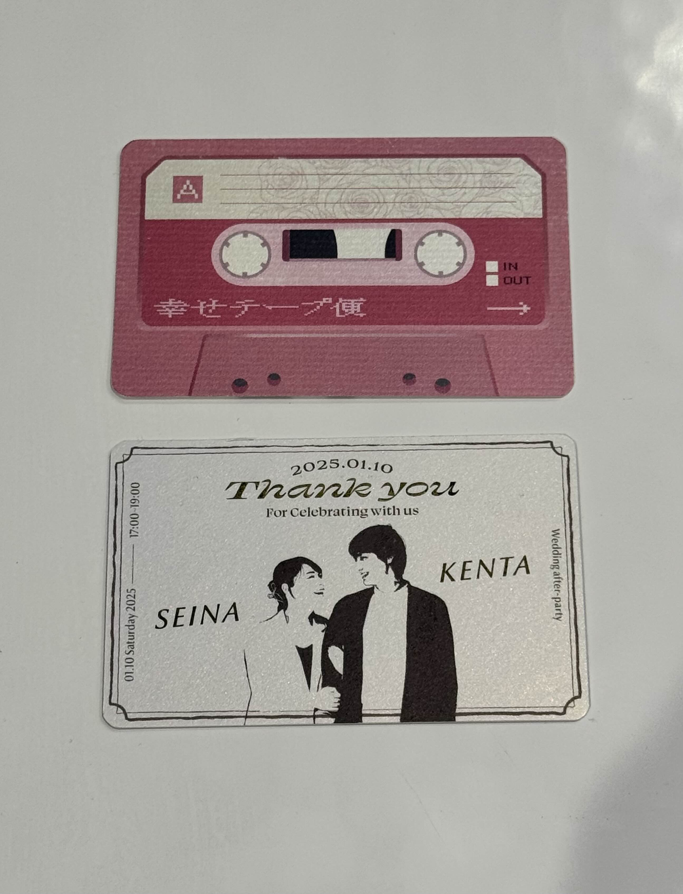

幸せテープ便
Happiness Tape Delivery
Concept
『記録』ではなく『記憶』を届ける
Delivering "memories" rather than just "records".
Overview
会場のゲストテーブルにはカセットテープカードが置かれています。参列者は会場にあるカセットデッキにARで音声を吹き込み、面と向かっては言えないような想いをカセットテープに込めます。
新郎新婦は、帰宅後みんなの本音メッセージを聞くことが出来ます。
デジタルなデータをあえて「カセットテープ」というアナログで物理的な媒体に関連付けることで、メッセージの重みや温かみを演出。ただ音声を送るだけでなく、「吹き込む」「手渡す」「再生する」という一連の行為そのものを思い出に残る体験としてデザインしました。
Cassette tape cards are placed on the guest tables at the venue. Attendees can record audio messages into a virtual AR cassette deck, filling the tape with heartfelt thoughts they might hesitate to say face-to-face.
After returning home, the bride and groom can listen to everyone's genuine messages.
By intentionally associating digital data with an analog, physical medium like a "cassette tape," we emphasize the weight and warmth of the messages. Rather than simply sending audio, the entire sequence of "recording," "handing over," and "playing back" is designed as a memorable experience.
Demo Video
